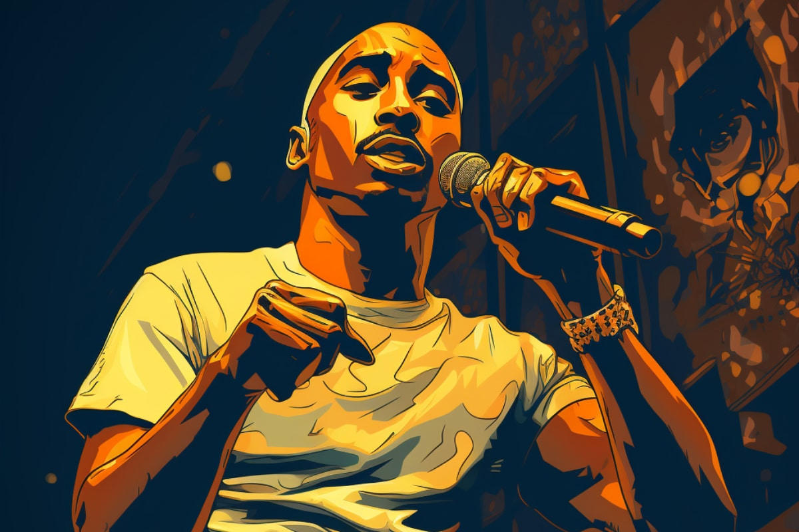

Реп-музика, або реп, є одним із найвпізнаваніших та впливових жанрів сучасної музики. Зародившись в багатокультурних містах Сполучених Штатів на початку 1970-х років, реп став яскравим вираженням життя в міському середовищі, проблем молоді та соціальних питань.
Сутність репу полягає в ритмічних віршах (римах), які виконуються на високій швидкості під музику. Виконавці репу, або репери, висловлюють свої думки, емоції та життєві історії через слова, часто звертаючись до соціальних та політичних питань.
Цей жанр має безліч відтінків, від гангста-репу до ліричного та соціального репу. Артисти, такі як Tupac Shakur, The Notorious B.I.G., Eminem та Kendrick Lamar, стали іконами реп-сцени і справжніми піонерами в цьому жанрі.
Вивчайте світ реп-музики, відкривайте нових артистів та дізнавайтеся більше про вплив цього жанру на сучасну культуру.
